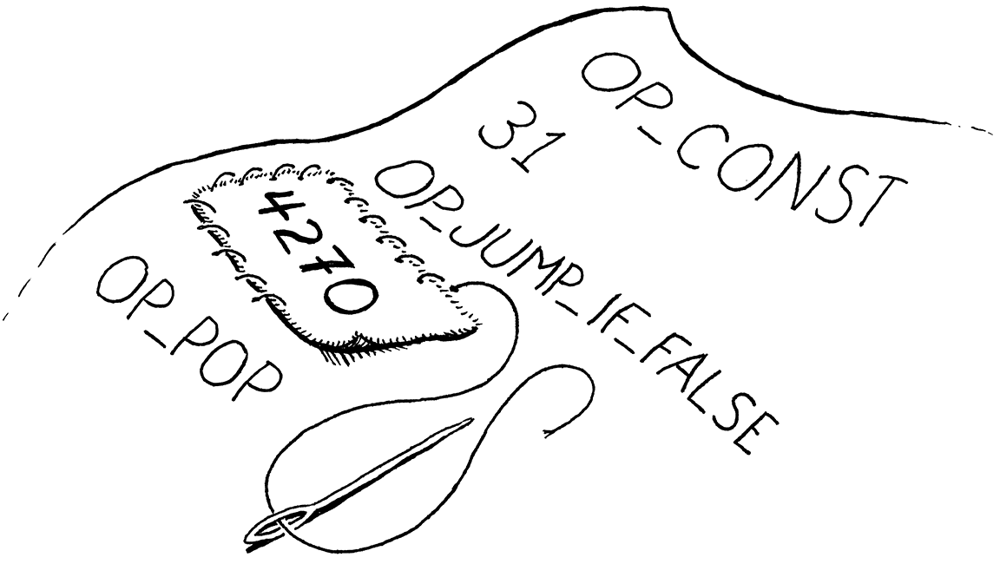

来回跳转
The order that our mind imagines is like a net, or like a ladder, built to attain something. But afterward you must throw the ladder away, because you discover that, even if it was useful, it was meaningless.
Umberto Eco, The Name of the Rose 我们头脑中想象的秩序就像一张网，或者像一架梯子，用来达到某种目的。但事后你必须把梯子扔掉，因为你会发现，即使它有用，也毫无意义。（翁贝托·艾柯，《玫瑰之名》）
It’s taken a while to get here, but we’re finally ready to add control flow to
our virtual machine. In the tree-walk interpreter we built for jlox, we
implemented Lox’s control flow in terms of Java’s. To execute a Lox if
statement, we used a Java if statement to run the chosen branch. That works,
but isn’t entirely satisfying. By what magic does the JVM itself or a native
CPU implement if statements? Now that we have our own bytecode VM to hack on,
we can answer that.
虽然花了一些时间，但我们终于准备好向虚拟机中添加控制流了。在我们为jlox构建的树遍历解释器中，我们以Java的方式实现了控制流。为了执行Lox的if语句，我们使用Java的if语句来执行所选的分支。这是可行的，但并不是完全令人满意。JVM本身或原生CPU如何实现if语句呢？现在我们有了自己的字节码虚拟机，我们可以回答这个问题。
When we talk about “control flow”, what are we referring to? By “flow” we mean the way execution moves through the text of the program. Almost like there is a little robot inside the computer wandering through our code, executing bits and pieces here and there. Flow is the path that robot takes, and by controlling the robot, we drive which pieces of code it executes. 当我们谈论“控制流”时，我们指的是什么？我们所说的“流”是指执行过程在程序文本中的移动方式。就好像电脑里有一个小机器人在我们的代码里游荡，在这里或那里执行一些零零碎碎的片段。流就是机器人所走的路径，通过控制机器人，我们驱动它执行某些代码片段。
In jlox, the robot’s locus of attention—the current bit of code—was
implicit based on which AST nodes were stored in various Java variables and what
Java code we were in the middle of running. In clox, it is much more explicit.
The VM’s ip field stores the address of the current bytecode instruction. The
value of that field is exactly “where we are” in the program.
在jlox中，机器人的关注点（当前代码位）是隐式的，它取决于哪些AST节点被存储在各种Java变量中，以及我们正在运行的Java代码是什么。在clox中，它要明确得多。VM的ip字段存储了当前字节码指令的地址。该字段的值正是我们在程序中的“位置”。
Execution proceeds normally by incrementing the ip. But we can mutate that
variable however we want to. In order to implement control flow, all that’s
necessary is to change the ip in more interesting ways. The simplest control
flow construct is an if statement with no else clause:
执行操作通常是通过增加ip进行的。但是我们可以随意地改变这个变量。为了实现控制流，所需要做的就是以更有趣的方式改变ip。最简单的控制流结构是没有else子句的if语句：
if (condition) print("condition was truthy");
The VM evaluates the bytecode for the condition expression. If the result is
truthy, then it continues along and executes the print statement in the body.
The interesting case is when the condition is falsey. When that happens,
execution skips over the then branch and proceeds to the next statement.
虚拟机会计算条件表达式对应的字节码。如果结构是真，则继续执行主体中的print语句。有趣的是当条件为假的时候，这种情况下，执行会跳过then分支并执行下一条语句。
To skip over a chunk of code, we simply set the ip field to the address of the
bytecode instruction following that code. To conditionally skip over some
code, we need an instruction that looks at the value on top of the stack. If
it’s falsey, it adds a given offset to the ip to jump over a range of
instructions. Otherwise, it does nothing and lets execution proceed to the next
instruction as usual.
要想跳过一大块代码，我们只需将ip字段设置为其后代码的字节码指令的地址。为了有条件地跳过一些代码，我们需要一条指令来查看栈顶的值。如果它是假，就在ip上增加一个给定的偏移量，跳过一系列指令。否则，它什么也不做，并照常执行下一条指令。
When we compile to bytecode, the explicit nested block structure of the code evaporates, leaving only a flat series of instructions behind. Lox is a structured programming language, but clox bytecode isn’t. The right—or wrong, depending on how you look at it—set of bytecode instructions could jump into the middle of a block, or from one scope into another.
The VM will happily execute that, even if the result leaves the stack in an unknown, inconsistent state. So even though the bytecode is unstructured, we’ll take care to ensure that our compiler only generates clean code that maintains the same structure and nesting that Lox itself does. 虚拟机会很高兴地执行这些指令，即使其结果会导致堆栈处于未知的、不一致的状态。因此，尽管字节码是非结构化的，我们也要确保编译成只生成与Lox本身保持相同结构和嵌套的干净代码。
This is exactly how real CPUs behave. Even though we might program them using higher-level languages that mandate structured control flow, the compiler lowers that down to raw jumps. At the bottom, it turns out goto is the only real control flow. 这就是真正的CPU的行为方式。即使我们可能会使用高级语言对它们进行编程，这些语言能够规定格式化控制流，但编译器也会将其降级为原生跳转。在底层，事实证明goto是唯一真正的控制流。
Anyway, I didn’t mean to get all philosophical. The important bit is that if we
have that one conditional jump instruction, that’s enough to implement Lox’s
if statement, as long as it doesn’t have an else clause. So let’s go ahead
and get started with that.
不管这么说，我并不是故意要搞得这么哲学化。重要的是，如果我们有一个条件跳转指令，就足以实现Lox的if语句了，只要它没有else子句。让我们开始吧。
23 . 1If语句
This many chapters in, you know the drill. Any new feature starts in the front
end and works its way through the pipeline. An if statement is, well, a
statement, so that’s where we hook it into the parser.
这么多章了，你知道该怎么做。任何新特性都是从前端开始的，如果沿着管道进行工作。if语句是一个，嗯，语句，所以我们通过语句将它连接到解析器。
if (match(TOKEN_PRINT)) {
printStatement();
in statement()
} else if (match(TOKEN_IF)) { ifStatement();
} else if (match(TOKEN_LEFT_BRACE)) {
When we see an if keyword, we hand off compilation to this function:
如果我们看到if关键字，就把编译工作交给这个函数：
add after expressionStatement()
static void ifStatement() { consume(TOKEN_LEFT_PAREN, "Expect '(' after 'if'."); expression(); consume(TOKEN_RIGHT_PAREN, "Expect ')' after condition."); int thenJump = emitJump(OP_JUMP_IF_FALSE); statement(); patchJump(thenJump); }
First we compile the condition expression, bracketed by parentheses. At runtime, that will leave the condition value on top of the stack. We’ll use that to determine whether to execute the then branch or skip it. 首先我们编译条件表达式（用小括号括起来）。在运行时，这会将条件值留在栈顶。我们将通过它来决定是执行then分支还是跳过它。
Then we emit a new OP_JUMP_IF_FALSE instruction. It has an operand for how
much to offset the ip—how many bytes of code to skip. If the condition is
falsey, it adjusts the ip by that amount. Something like this:
然后我们生成一个新的OP_JUMP_IF_ELSE指令。这条指令有一个操作数，用来表示ip的偏移量——要跳过多少字节的代码。如果条件是假，它就按这个值调整ip，就像这样：

But we have a problem. When we’re writing the OP_JUMP_IF_FALSE instruction’s
operand, how do we know how far to jump? We haven’t compiled the then branch
yet, so we don’t know how much bytecode it contains.
但我们有个问题。当我们写OP_JUMP_IF_FALSE指令的操作数时，我们怎么知道要跳多远？我们还没有编译then分支，所以我们不知道它包含多少字节码。
To fix that, we use a classic trick called backpatching. We emit the jump instruction first with a placeholder offset operand. We keep track of where that half-finished instruction is. Next, we compile the then body. Once that’s done, we know how far to jump. So we go back and replace that placeholder offset with the real one now that we can calculate it. Sort of like sewing a patch onto the existing fabric of the compiled code. 为了解决这个问题，我们使用了一个经典的技巧，叫作回填（backpatching）。我们首先生成跳转指令，并附上一个占位的偏移量操作数，我们跟踪这个半成品指令的位置。接下来，我们编译then主体。一旦完成，我们就知道要跳多远。所以我们回去将占位符替换为真正的偏移量，现在我们可以计算它了。这有点像在已编译代码的现有结构上打补丁。
We encode this trick into two helper functions. 我们将这个技巧编码为两个辅助函数。
add after emitBytes()
static int emitJump(uint8_t instruction) { emitByte(instruction); emitByte(0xff); emitByte(0xff); return currentChunk()->count - 2; }
The first emits a bytecode instruction and writes a placeholder operand for the jump offset. We pass in the opcode as an argument because later we’ll have two different instructions that use this helper. We use two bytes for the jump offset operand. A 16-bit offset lets us jump over up to 65,535 bytes of code, which should be plenty for our needs. 第一个程序会生成一个字节码指令，并为跳转偏移量写入一个占位符操作数。我们把操作码作为参数传入，因为稍后我们会有两个不同的指令都使用这个辅助函数。我们使用两个字节作为跳转偏移量的操作数。一个16位的偏移量可以让我们跳转65535个字节的代码，这对于我们的需求来说应该足够了。
The function returns the offset of the emitted instruction in the chunk. After compiling the then branch, we take that offset and pass it to this: 该函数会返回生成的指令在字节码块中的偏移量。编译完then分支后，我们将这个偏移量传递给这个函数：
add after emitConstant()
static void patchJump(int offset) { // -2 to adjust for the bytecode for the jump offset itself. int jump = currentChunk()->count - offset - 2; if (jump > UINT16_MAX) { error("Too much code to jump over."); } currentChunk()->code[offset] = (jump >> 8) & 0xff; currentChunk()->code[offset + 1] = jump & 0xff; }
This goes back into the bytecode and replaces the operand at the given location
with the calculated jump offset. We call patchJump() right before we emit the
next instruction that we want the jump to land on, so it uses the current
bytecode count to determine how far to jump. In the case of an if statement,
that means right after we compile the then branch and before we compile the next
statement.
这个函数会返回到字节码中，并将给定位置的操作数替换为计算出的跳转偏移量。我们在生成下一条希望跳转的指令之前调用patchJump()，因此会使用当前字节码计数来确定要跳转的距离。在if语句的情况下，就是在编译完then分支之后，并在编译下一个语句之前。
That’s all we need at compile time. Let’s define the new instruction. 这就是在编译时需要做的。让我们来定义新指令。
OP_PRINT,
in enum OpCode
OP_JUMP_IF_FALSE,
OP_RETURN,
Over in the VM, we get it working like so: 在虚拟机中，我们让它这样工作：
break;
}
in run()
case OP_JUMP_IF_FALSE: { uint16_t offset = READ_SHORT(); if (isFalsey(peek(0))) vm.ip += offset; break; }
case OP_RETURN: {
This is the first instruction we’ve added that takes a 16-bit operand. To read that from the chunk, we use a new macro. 这是我们添加的第一个需要16位操作数的指令。为了从字节码块中读出这个指令，需要使用一个新的宏。
#define READ_CONSTANT() (vm.chunk->constants.values[READ_BYTE()])
in run()
#define READ_SHORT() \ (vm.ip += 2, (uint16_t)((vm.ip[-2] << 8) | vm.ip[-1]))
#define READ_STRING() AS_STRING(READ_CONSTANT())
It yanks the next two bytes from the chunk and builds a 16-bit unsigned integer out of them. As usual, we clean up our macro when we’re done with it. 它从字节码块中抽取接下来的两个字节，并从中构建出一个16位无符号整数。和往常一样，当我们结束之后要清理宏。
#undef READ_BYTE
in run()
#undef READ_SHORT
#undef READ_CONSTANT
After reading the offset, we check the condition value on top of the stack.
If it’s falsey, we apply this jump offset to the ip.
Otherwise, we leave the ip alone and execution will automatically proceed to
the next instruction following the jump instruction.
读取偏移量之后，我们检查栈顶的条件值。如果是假，我们就将这个跳转偏移量应用到ip上。否则，我们就保持ip不变，执行会自动进入跳转指令的下一条指令。
In the case where the condition is falsey, we don’t need to do any other work.
We’ve offset the ip, so when the outer instruction dispatch loop turns again,
it will pick up execution at that new instruction, past all of the code in the
then branch.
在条件为假的情况下，我们不需要做任何其它工作。我们已经移动了ip，所以当外部指令调度循环再次启动时，将会在新指令处执行，跳过了then分支的所有代码。
Note that the jump instruction doesn’t pop the condition value off the stack. So
we aren’t totally done here, since this leaves an extra value floating around on
the stack. We’ll clean that up soon. Ignoring that for the moment, we do have a
working if statement in Lox now, with only one little instruction required to
support it at runtime in the VM.
请注意，跳转指令并没有将条件值弹出栈。因此，我们在这里还没有全部完成，因为还在堆栈上留下了一个额外的值。我们很快就会把它清理掉。暂时先忽略这个问题，我们现在在Lox中已经有了可用的if语句，只需要一条小指令在虚拟机运行时支持它。
23 . 1 . 1Else 子句
An if statement without support for else clauses is like Morticia Addams
without Gomez. So, after we compile the then branch, we look for an else
keyword. If we find one, we compile the else branch.
一个不支持else子句的if语句就像没有Gomez的Morticia Addams（《亚当斯一家》）。因此，在我们编译完then分支之后，我们要寻找else关键字。如果找到了，则编译else分支。
patchJump(thenJump);
in ifStatement()
if (match(TOKEN_ELSE)) statement();
}
When the condition is falsey, we’ll jump over the then branch. If there’s an
else branch, the ip will land right at the beginning of its code. But that’s
not enough, though. Here’s the flow that leads to:
当条件为假时，我们会跳过then分支。如果存在else分支，ip就会出现在其字节码的开头处。但这还不够。下面是对应的流：

If the condition is truthy, we execute the then branch like we want. But after that, execution rolls right on through into the else branch. Oops! When the condition is true, after we run the then branch, we need to jump over the else branch. That way, in either case, we only execute a single branch, like this: 如果条件是真，则按照要求执行then分支。但在那之后，执行会直接转入到else分支。糟糕！当条件为真时，执行完then分支后，我们需要跳过else分支。这样，无论哪种情况，我们都只执行一个分支，像这样：

To implement that, we need another jump from the end of the then branch. 为了实现这一点，我们需要从then分支的末端再进行一次跳转。
statement();
in ifStatement()
int elseJump = emitJump(OP_JUMP);
patchJump(thenJump);
We patch that offset after the end of the else body. 我们在else主体结束后修补这个偏移量。
if (match(TOKEN_ELSE)) statement();
in ifStatement()
patchJump(elseJump);
}
After executing the then branch, this jumps to the next statement after the else branch. Unlike the other jump, this jump is unconditional. We always take it, so we need another instruction that expresses that. 在执行完then分支后，会跳转到else分支之后的下一条语句。与其它跳转不同，这个跳转是无条件的。我们一定会接受该跳转，所以我们需要另一条指令来表达它。
OP_PRINT,
in enum OpCode
OP_JUMP,
OP_JUMP_IF_FALSE,
We interpret it like so: 我们这样来解释它：
break;
}
in run()
case OP_JUMP: { uint16_t offset = READ_SHORT(); vm.ip += offset; break; }
case OP_JUMP_IF_FALSE: {
Nothing too surprising here—the only difference is that it doesn’t check a condition and always applies the offset. 这里没有什么特别出人意料的——唯一的区别就是它不检查条件，并且一定会应用偏移量。
We have then and else branches working now, so we’re close. The last bit is to clean up that condition value we left on the stack. Remember, each statement is required to have zero stack effect—after the statement is finished executing, the stack should be as tall as it was before. 我们现在有了then和else分支，所以已经接近完成了。最后一点是清理我们遗留在栈上的条件值。请记住，每个语句都要求是0堆栈效应——在语句执行完毕后，堆栈应该与之前一样高。
We could have the OP_JUMP_IF_FALSE instruction pop the condition itself, but
soon we’ll use that same instruction for the logical operators where we don’t
want the condition popped. Instead, we’ll have the compiler emit a couple of
explicit OP_POP instructions when compiling an if statement. We need to take
care that every execution path through the generated code pops the condition.
我们可以让OP_JUMP_IF_FALSE指令自身弹出条件值，但很快我们会对不希望弹出条件值的逻辑运算符使用相同的指令。相对地，我们在编译if语句时，会让编译器生成几条显式的OP_POP指令，我们需要注意生成的代码中的每一条执行路径都要弹出条件值。
When the condition is truthy, we pop it right before the code inside the then branch. 当条件为真时，我们会在进入then分支的代码前弹出该值。
int thenJump = emitJump(OP_JUMP_IF_FALSE);
in ifStatement()
emitByte(OP_POP);
statement();
Otherwise, we pop it at the beginning of the else branch. 否则，我们就在else分支的开头弹出它。
patchJump(thenJump);
in ifStatement()
emitByte(OP_POP);
if (match(TOKEN_ELSE)) statement();
This little instruction here also means that every if statement has an
implicit else branch even if the user didn’t write an else clause. In the case
where they left it off, all the branch does is discard the condition value.
这里的这个小指令也意味着每个if语句都有一个隐含的else分支，即使用户没有写else子句。在用户没有写else子句的情况下，这个分支所做的就是丢弃条件值。
The full correct flow looks like this: 完整正确的流看起来是这样的：

If you trace through, you can see that it always executes a single branch and ensures the condition is popped first. All that remains is a little disassembler support. 如果你跟踪整个过程，可以看到它总是只执行一个分支，并确保条件值首先被弹出。剩下的就是一点反汇编程序的支持了。
return simpleInstruction("OP_PRINT", offset);
in disassembleInstruction()
case OP_JUMP: return jumpInstruction("OP_JUMP", 1, chunk, offset); case OP_JUMP_IF_FALSE: return jumpInstruction("OP_JUMP_IF_FALSE", 1, chunk, offset);
case OP_RETURN:
These two instructions have a new format with a 16-bit operand, so we add a new utility function to disassemble them. 这两条指令具有新格式，有着16位的操作数，因此我们添加了一个新的工具函数来反汇编它们。
add after byteInstruction()
static int jumpInstruction(const char* name, int sign, Chunk* chunk, int offset) { uint16_t jump = (uint16_t)(chunk->code[offset + 1] << 8); jump |= chunk->code[offset + 2]; printf("%-16s %4d -> %d\n", name, offset, offset + 3 + sign * jump); return offset + 3; }
There we go, that’s one complete control flow construct. If this were an ’80s movie, the montage music would kick in and the rest of the control flow syntax would take care of itself. Alas, the ’80s are long over, so we’ll have to grind it out ourselves. 就这样，这就是一个完整的控制流结构。如果这是一部80年代的电影，蒙太奇音乐就该响起了，剩下的控制流语法就会自行完成。唉，80年代已经过去很久了，所以我们得自己打磨了。
23 . 2逻辑运算符
You probably remember this from jlox, but the logical operators and and or
aren’t just another pair of binary operators like + and -. Because they
short-circuit and may not evaluate their right operand depending on the value of
the left one, they work more like control flow expressions.
你可能还记得jlox中的实现，但是逻辑运算符and和or并不仅仅是另一对像+和-一样的二元运算符。因为它们是短路的，根据左操作数的值，有可能不会对右操作数求值，它们的工作方式 更像是控制流表达式。
They’re basically a little variation on an if statement with an else clause.
The easiest way to explain them is to just show you the compiler code and the
control flow it produces in the resulting bytecode. Starting with and, we hook
it into the expression parsing table here:
它们基本上是带有else子句的if语句的小变体。解释它们的最简单的方法是向你展示编译器代码以及它在字节码中生成的控制流。从and开始，我们把它挂接到表达式解析表中：
[TOKEN_NUMBER] = {number, NULL, PREC_NONE},
replace 1 line
[TOKEN_AND] = {NULL, and_, PREC_AND},
[TOKEN_CLASS] = {NULL, NULL, PREC_NONE},
That hands off to a new parser function. 这就交给了一个新的解析器函数。
add after defineVariable()
static void and_(bool canAssign) { int endJump = emitJump(OP_JUMP_IF_FALSE); emitByte(OP_POP); parsePrecedence(PREC_AND); patchJump(endJump); }
At the point this is called, the left-hand side expression has already been
compiled. That means at runtime, its value will be on top of the stack. If that
value is falsey, then we know the entire and must be false, so we skip the
right operand and leave the left-hand side value as the result of the entire
expression. Otherwise, we discard the left-hand value and evaluate the right
operand which becomes the result of the whole and expression.
在这个方法被调用时，左侧的表达式已经被编译了。这意味着，在运行时，它的值将会在栈顶。如果这个值为假，我们就知道整个and表达式的结果一定是假，所以我们跳过右边的操作数，将左边的值作为整个表达式的结果。否则，我们就丢弃左值，计算右操作数，并将它作为整个and表达式的结果。
Those four lines of code right there produce exactly that. The flow looks like this: 这四行代码正是产生这样的结果。流程看起来像这样：

Now you can see why OP_JUMP_IF_FALSE leaves the
value on top of the stack. When the left-hand side of the and is falsey, that
value sticks around to become the result of the entire expression.
现在你可以看到为什么OP_JUMP_IF_FALSE要将值留在栈顶。当and左侧的值为假时，这个值会保留下来，成为整个表达式的结果。
23 . 2 . 1逻辑or运算符
The or operator is a little more complex. First we add it to the parse table.
or运算符有点复杂。首先，我们将它添加到解析表中。
[TOKEN_NIL] = {literal, NULL, PREC_NONE},
replace 1 line
[TOKEN_OR] = {NULL, or_, PREC_OR},
[TOKEN_PRINT] = {NULL, NULL, PREC_NONE},
When that parser consumes an infix or token, it calls this:
当解析器处理中缀or标识时，会调用这个：
add after number()
static void or_(bool canAssign) { int elseJump = emitJump(OP_JUMP_IF_FALSE); int endJump = emitJump(OP_JUMP); patchJump(elseJump); emitByte(OP_POP); parsePrecedence(PREC_OR); patchJump(endJump); }
In an or expression, if the left-hand side is truthy, then we skip over the
right operand. Thus we need to jump when a value is truthy. We could add a
separate instruction, but just to show how our compiler is free to map the
language’s semantics to whatever instruction sequence it wants, I implemented it
in terms of the jump instructions we already have.
在or表达式中，如果左侧值为真，那么我们就跳过右侧的操作数。因此，当值为真时，我们需要跳过。我们可以添加一条单独的指令，但为了说明编译器如何自由地将语言的语义映射为它想要的任何指令序列，我会使用已有的跳转指令来实现它。
When the left-hand side is falsey, it does a tiny jump over the next statement. That statement is an unconditional jump over the code for the right operand. This little dance effectively does a jump when the value is truthy. The flow looks like this: 当左侧值为假时，它会做一个小跳跃，跳过下一条语句。该语句会无条件跳过右侧操作数的代码。当值为真时，就会进行该跳转。流程看起来是这样的：

If I’m honest with you, this isn’t the best way to do this. There are more
instructions to dispatch and more overhead. There’s no good reason why or
should be slower than and. But it is kind of fun to see that it’s possible to
implement both operators without adding any new instructions. Forgive me my
indulgences.
说实话，这并不是最好的方法。（这种方式中）需要调度的指令更多，开销也更大。没有充足的理由说明为什么or要比and慢。但是，可以在不增加任何新指令的前提下实现两个运算符，这是有趣的。请原谅我的放纵。
OK, those are the three branching constructs in Lox. By that, I mean, these
are the control flow features that only jump forward over code. Other
languages often have some kind of multi-way branching statement like switch
and maybe a conditional expression like ?:, but Lox keeps it simple.
好了，这就是Lox中的三个分支结构。我的意思是，这些控制流特性只能在代码上向前跳转。其它语言中通常有某种多路分支语句，如switch，也许还有条件表达式?:，但Lox保持简单。
23 . 3While语句
That takes us to the looping statements, which jump backward so that code
can be executed more than once. Lox only has two loop constructs, while and
for. A while loop is (much) simpler, so we start the party there.
这就将我们带到了循环语句，循环语句会向后跳转，使代码可以多次执行。Lox只有两种循环结构while和for。while循环要简单（得多），所以我们从这里开始。
ifStatement();
in statement()
} else if (match(TOKEN_WHILE)) { whileStatement();
} else if (match(TOKEN_LEFT_BRACE)) {
When we reach a while token, we call:
当我们遇到while标识时，调用：
add after printStatement()
static void whileStatement() { consume(TOKEN_LEFT_PAREN, "Expect '(' after 'while'."); expression(); consume(TOKEN_RIGHT_PAREN, "Expect ')' after condition."); int exitJump = emitJump(OP_JUMP_IF_FALSE); emitByte(OP_POP); statement(); patchJump(exitJump); emitByte(OP_POP); }
Most of this mirrors if statements—we compile the condition expression,
surrounded by mandatory parentheses. That’s followed by a jump instruction that
skips over the subsequent body statement if the condition is falsey.
大部分跟if语句相似——我们编译条件表达式（强制用括号括起来）。之后是一个跳转指令，如果条件为假，会跳过后续的主体语句。
We patch the jump after compiling the body and take care to pop the condition value from the stack on either path. The
only difference from an if statement is the loop. That looks like this:
我们在编译完主体之后对跳转指令进行修补，并注意在每个执行路径上都要弹出栈顶的条件值。与if语句的唯一区别就是循环。看起来像这样：
statement();
in whileStatement()
emitLoop(loopStart);
patchJump(exitJump);
After the body, we call this function to emit a “loop” instruction. That instruction needs to know how far back to jump. When jumping forward, we had to emit the instruction in two stages since we didn’t know how far we were going to jump until after we emitted the jump instruction. We don’t have that problem now. We’ve already compiled the point in code that we want to jump back to—it’s right before the condition expression. 在主体之后，我们调用这个函数来生成一个“循环”指令。该指令需要知道往回跳多远。当向前跳时，我们必须分两个阶段发出指令，因为在发出跳跃指令前，我们不知道要跳多远。现在我们没有这个问题了。我们已经编译了要跳回去的代码位置——就在条件表达式之前。
All we need to do is capture that location as we compile it. 我们所需要做的就是在编译时捕获这个位置。
static void whileStatement() {
in whileStatement()
int loopStart = currentChunk()->count;
consume(TOKEN_LEFT_PAREN, "Expect '(' after 'while'.");
After executing the body of a while loop, we jump all the way back to before
the condition. That way, we re-evaluate the condition expression on each
iteration. We store the chunk’s current instruction count in loopStart to
record the offset in the bytecode right before the condition expression we’re
about to compile. Then we pass that into this helper function:
在执行完while循环后，我们会一直跳到条件表达式之前。这样，我们就可以在每次迭代时都重新对条件表达式求值。我们在loopStar中存储字节码块中当前的指令数，作为我们即将编译的条件表达式在字节码中的偏移量。然后我们将该值传给这个辅助函数：
add after emitBytes()
static void emitLoop(int loopStart) { emitByte(OP_LOOP); int offset = currentChunk()->count - loopStart + 2; if (offset > UINT16_MAX) error("Loop body too large."); emitByte((offset >> 8) & 0xff); emitByte(offset & 0xff); }
It’s a bit like emitJump() and patchJump() combined. It emits a new loop
instruction, which unconditionally jumps backwards by a given offset. Like the
jump instructions, after that we have a 16-bit operand. We calculate the offset
from the instruction we’re currently at to the loopStart point that we want to
jump back to. The + 2 is to take into account the size of the OP_LOOP
instruction’s own operands which we also need to jump over.
这有点像emitJump()和patchJump() 的结合。它生成一条新的循环指令，该指令会无条件地向回跳转给定的偏移量。和跳转指令一样，其后还有一个16位的操作数。我们计算当前指令到我们想要跳回的loopStart之间的偏移量。+2是考虑到了OP_LOOP指令自身操作数的大小，这个操作数我们也需要跳过。
From the VM’s perspective, there really is no semantic difference between
OP_LOOP and OP_JUMP. Both just add an offset to the ip. We could have used
a single instruction for both and given it a signed offset operand. But I
figured it was a little easier to sidestep the annoying bit twiddling required
to manually pack a signed 16-bit integer into two bytes, and we’ve got the
opcode space available, so why not use it?
从虚拟机的角度看，OP_LOOP 和OP_JUMP之间实际上没有语义上的区别。两者都只是在ip上加了一个偏移量。我们本可以用一条指令来处理这两者，并给该指令传入一个有符号的偏移量操作数。但我认为，这样做更容易避免手动将一个有符号的16位整数打包到两个字节所需要的烦人的位操作，况且我们有可用的操作码空间，为什么不使用呢？
The new instruction is here: 新指令如下：
OP_JUMP_IF_FALSE,
in enum OpCode
OP_LOOP,
OP_RETURN,
And in the VM, we implement it thusly: 在虚拟机中，我们这样实现它：
}
in run()
case OP_LOOP: { uint16_t offset = READ_SHORT(); vm.ip -= offset; break; }
case OP_RETURN: {
The only difference from OP_JUMP is a subtraction instead of an addition.
Disassembly is similar too.
与OP_JUMP唯一的区别就是这里使用了减法而不是加法。反汇编也是相似的。
return jumpInstruction("OP_JUMP_IF_FALSE", 1, chunk, offset);
in disassembleInstruction()
case OP_LOOP: return jumpInstruction("OP_LOOP", -1, chunk, offset);
case OP_RETURN:
That’s our while statement. It contains two jumps—a conditional forward one
to escape the loop when the condition is not met, and an unconditional loop
backward after we have executed the body. The flow looks like this:
这就是我们的while语句。它包含两个跳转——一个是有条件的前向跳转，用于在不满足条件的时候退出循环；另一个是在执行完主体代码后的无条件跳转。流程看起来如下：

23 . 4For语句
The other looping statement in Lox is the venerable for loop, inherited from
C. It’s got a lot more going on with it compared to a while loop. It has three
clauses, all of which are optional:
Lox中的另一个循环语句是古老的for循环，继承自C语言。与while循环相比，它有着更多的功能。它有三个子句，都是可选的：
-
The initializer can be a variable declaration or an expression. It runs once at the beginning of the statement.
-
The condition clause is an expression. Like in a
whileloop, we exit the loop when it evaluates to something falsey. -
The increment expression runs once at the end of each loop iteration.
In jlox, the parser desugared a for loop to a synthesized AST for a while
loop with some extra stuff before it and at the end of the body. We’ll do
something similar, though we won’t go through anything like an AST. Instead,
our bytecode compiler will use the jump and loop instructions we already have.
在jlox中，解析器将for循环解构为一个while循环与其主体前后的一些额外内容的合成AST。我们会做一些类似的事情，不过我们不会使用AST之类的东西。相反，我们的字节码编译器将使用我们已有的跳转和循环指令。
We’ll work our way through the implementation a piece at a time, starting with
the for keyword.
我们将从for关键字开始，逐步完成整个实现。
printStatement();
in statement()
} else if (match(TOKEN_FOR)) { forStatement();
} else if (match(TOKEN_IF)) {
It calls a helper function. If we only supported for loops with empty clauses
like for (;;), then we could implement it like this:
它会调用一个辅助函数。如果我们只支持for(::)这样带有空子句的for循环，那么我们可以这样实现它：
add after expressionStatement()
static void forStatement() { consume(TOKEN_LEFT_PAREN, "Expect '(' after 'for'."); consume(TOKEN_SEMICOLON, "Expect ';'."); int loopStart = currentChunk()->count; consume(TOKEN_SEMICOLON, "Expect ';'."); consume(TOKEN_RIGHT_PAREN, "Expect ')' after for clauses."); statement(); emitLoop(loopStart); }
There’s a bunch of mandatory punctuation at the top. Then we compile the body.
Like we did for while loops, we record the bytecode offset at the top of the
body and emit a loop to jump back to that point after it. We’ve got a working
implementation of infinite loops now.
首先是一堆强制性的标点符号。然后我们编译主体。与while循环一样，我们在主体的顶部记录字节码的偏移量，并在之后生成一个循环指令跳回该位置。现在我们已经有了一个无限循环的有效实现。
23 . 4 . 1初始化子句
Now we’ll add the first clause, the initializer. It executes only once, before the body, so compiling is straightforward. 现在我们要添加第一个子句，初始化器。它只在主体之前执行一次，因此编译很简单。
consume(TOKEN_LEFT_PAREN, "Expect '(' after 'for'.");
in forStatement()
replace 1 line
if (match(TOKEN_SEMICOLON)) { // No initializer. } else if (match(TOKEN_VAR)) { varDeclaration(); } else { expressionStatement(); }
int loopStart = currentChunk()->count;
The syntax is a little complex since we allow either a variable declaration or
an expression. We use the presence of the var keyword to tell which we have.
For the expression case, we call expressionStatement() instead of
expression(). That looks for a semicolon, which we need here too, and also
emits an OP_POP instruction to discard the value. We don’t want the
initializer to leave anything on the stack.
语法有点复杂，因为我们允许出现变量声明或表达式。我们通过是否存在var关键字来判断是哪种类型。对于表达式，我们调用expressionStatement()而不是expression()。它会查找分号（我们这里也需要一个分号），并生成一个OP_POP指令来丢弃表达式的值。我们不希望初始化器在堆栈中留下任何东西。
If a for statement declares a variable, that variable should be scoped to the
loop body. We ensure that by wrapping the whole statement in a scope.
如果for语句声明了一个变量，那么该变量的作用域应该限制在循环体中。我们通过将整个语句包装在一个作用域中来确保这一点。
static void forStatement() {
in forStatement()
beginScope();
consume(TOKEN_LEFT_PAREN, "Expect '(' after 'for'.");
Then we close it at the end. 然后我们在结尾关闭这个作用域。
emitLoop(loopStart);
in forStatement()
endScope();
}
23 . 4 . 2条件子句
Next, is the condition expression that can be used to exit the loop. 接下来，是可以用来退出循环的条件表达式。
int loopStart = currentChunk()->count;
in forStatement()
replace 1 line
int exitJump = -1; if (!match(TOKEN_SEMICOLON)) { expression(); consume(TOKEN_SEMICOLON, "Expect ';' after loop condition."); // Jump out of the loop if the condition is false. exitJump = emitJump(OP_JUMP_IF_FALSE); emitByte(OP_POP); // Condition. }
consume(TOKEN_RIGHT_PAREN, "Expect ')' after for clauses.");
Since the clause is optional, we need to see if it’s actually present. If the clause is omitted, the next token must be a semicolon, so we look for that to tell. If there isn’t a semicolon, there must be a condition expression. 因为子句是可选的，我们需要查看它是否存在。如果子句被省略，下一个标识一定是分号，所以我们通过查找分号来进行判断。如果没有分号，就一定有一个条件表达式。
In that case, we compile it. Then, just like with while, we emit a conditional
jump that exits the loop if the condition is falsey. Since the jump leaves the
value on the stack, we pop it before executing the body. That ensures we discard
the value when the condition is true.
在这种情况下，我们对它进行编译。然后，就像while一样，我们生成一个条件跳转指令，如果条件为假则退出循环。因为跳转指令将值留在了栈上，我们在执行主体之前将值弹出。这样可以确保当条件值为真时，我们会丢弃这个值。
After the loop body, we need to patch that jump. 在循环主体之后，我们需要修补跳转指令。
emitLoop(loopStart);
in forStatement()
if (exitJump != -1) { patchJump(exitJump); emitByte(OP_POP); // Condition. }
endScope(); }
We do this only when there is a condition clause. If there isn’t, there’s no jump to patch and no condition value on the stack to pop. 我们只在有条件子句的时候才会这样做。如果没有条件子句，就没有需要修补的跳转指令，堆栈中也没有条件值需要弹出。
23 . 4 . 3增量子句
I’ve saved the best for last, the increment clause. It’s pretty convoluted. It
appears textually before the body, but executes after it. If we parsed to an
AST and generated code in a separate pass, we could simply traverse into and
compile the for statement AST’s body field before its increment clause.
我把非常复杂的增量子句部分留到最后。从文本上看，它出现在循环主体之前，但却是在主体之后执行。如果我们将其解析为AST，并在单独的处理过程中生成代码，就可以简单地遍历并编译for语句AST的主体字段，然后再编译其增量子句。
Unfortunately, we can’t compile the increment clause later, since our compiler only makes a single pass over the code. Instead, we’ll jump over the increment, run the body, jump back up to the increment, run it, and then go to the next iteration. 不幸的是，我们不能稍后再编译增量子句，因为我们的编译器只对代码做了一次遍历。相对地，我们会跳过增量子句，运行主体，跳回增量子句，运行它，然后进入下一个迭代。
I know, a little weird, but hey, it beats manually managing ASTs in memory in C, right? Here’s the code: 我知道，这有点奇怪，但是，这总比在C语言中手动管理内存中的AST要好，对吗？代码如下：
}
in forStatement()
replace 1 line
if (!match(TOKEN_RIGHT_PAREN)) { int bodyJump = emitJump(OP_JUMP); int incrementStart = currentChunk()->count; expression(); emitByte(OP_POP); consume(TOKEN_RIGHT_PAREN, "Expect ')' after for clauses."); emitLoop(loopStart); loopStart = incrementStart; patchJump(bodyJump); }
statement();
Again, it’s optional. Since this is the last clause, when omitted, the next token will be the closing parenthesis. When an increment is present, we need to compile it now, but it shouldn’t execute yet. So, first, we emit an unconditional jump that hops over the increment clause’s code to the body of the loop. 同样，它也是可选的。因为这是最后一个子句，下一个标识是右括号。当存在增加子句时，我们需要立即编译它，但是它还不应该执行。因此，首先我们生成一个无条件跳转指令，该指令会跳过增量子句的代码进入循环体中。
Next, we compile the increment expression itself. This is usually an assignment. Whatever it is, we only execute it for its side effect, so we also emit a pop to discard its value. 接下来，我们编译增量表达式本身。这通常是一个赋值语句。不管它是什么，我们执行它只是为了它的副作用，所以我们也生成一个弹出指令丢弃该值。
The last part is a little tricky. First, we emit a loop instruction. This is the
main loop that takes us back to the top of the for loop—right before the
condition expression if there is one. That loop happens right after the
increment, since the increment executes at the end of each loop iteration.
最后一部分有点棘手。首先，我们生成一个循环指令。这是主循环，会将我们带到for循环的顶部——如果有条件表达式的话，就回在它前面。这个循环发生在增量语句之后，因此增量语句是在每次循环迭代结束时执行的。
Then we change loopStart to point to the offset where the increment expression
begins. Later, when we emit the loop instruction after the body statement, this
will cause it to jump up to the increment expression instead of the top of the
loop like it does when there is no increment. This is how we weave the
increment in to run after the body.
然后我们更改loopStart，指向增量表达式开始处的偏移量。之后，当我们在主体语句结束之后生成循环指令时，就会跳转到增量表达式，而不是像没有增量表达式时那样跳转到循环顶部。这就是我们如何在主体之后运行增量子句的办法。
It’s convoluted, but it all works out. A complete loop with all the clauses compiles to a flow like this: 这很复杂，但一切都解决了。一个包含所有子句的完整循环会被编译为类似这样的流程：

As with implementing for loops in jlox, we didn’t need to touch the runtime.
It all gets compiled down to primitive control flow operations the VM already
supports. In this chapter, we’ve taken a big leap
forward—clox is now Turing complete. We’ve also covered quite a bit of new
syntax: three statements and two expression forms. Even so, it only took three
new simple instructions. That’s a pretty good effort-to-reward ratio for the
architecture of our VM.
与jlox中实现for循环一样，我们不需要接触运行时。所有这些都被编译到虚拟机已经支持的原始控制流中。在这一章中，我们向前迈出了一大步——clox现在图灵完整了。我们还讨论了相当多的新语法：三种语句和两种表达式形式。即便如此，我们也只用了三个简单的新指令。对于我们的虚拟机架构来说，这是一个相当不错的努力-回报比。
Challenges
-
In addition to
ifstatements, most C-family languages have a multi-wayswitchstatement. Add one to clox. The grammar is: 除了if语句，大多数C家族语言都要一个多路switch语句。在clox中添加一个。语法如下：switchStmt → "switch" "(" expression ")" "{" switchCase* defaultCase? "}" ; switchCase → "case" expression ":" statement* ; defaultCase → "default" ":" statement* ;
To execute a
switchstatement, first evaluate the parenthesized switch value expression. Then walk the cases. For each case, evaluate its value expression. If the case value is equal to the switch value, execute the statements under the case and then exit theswitchstatement. Otherwise, try the next case. If no case matches and there is adefaultclause, execute its statements. 为了执行switch语句，首先要计算括号内的switch值表达式。然后遍历分支。对于每个分支，计算其值表达式。如果case值等于switch值，就执行case下的语句，然后退出switch语句。否则，就尝试下一个case分支。如果没有匹配的分支，并且有default子句，就执行其中的语句。To keep things simpler, we’re omitting fallthrough and
breakstatements. Each case automatically jumps to the end of the switch statement after its statements are done. 为了让事情更简单，我们省略了fall through和break语句。每个case子句在其语句完成后会自动跳转到switch语句的结尾。 -
In jlox, we had a challenge to add support for
breakstatements. This time, let’s docontinue: 在jlox中，我们有一个习题是添加对break语句的支持。这一次，我们来做continue：continueStmt → "continue" ";" ;
A
continuestatement jumps directly to the top of the nearest enclosing loop, skipping the rest of the loop body. Inside aforloop, acontinuejumps to the increment clause, if there is one. It’s a compile-time error to have acontinuestatement not enclosed in a loop.continue语句直接跳转到最内层的封闭循环的顶部，跳过循环体的其余部分。在for循环中，如果有增量子句，continue会跳到增量子句。如果continue子句没有被包含在循环中，则是一个编译时错误。Make sure to think about scope. What should happen to local variables declared inside the body of the loop or in blocks nested inside the loop when a
continueis executed? 一定要考虑作用域问题。当执行continue语句时，在循环体内或嵌套在循环体中的代码块内声明的局部变量应该如何处理？ -
Control flow constructs have been mostly unchanged since Algol 68. Language evolution since then has focused on making code more declarative and high level, so imperative control flow hasn’t gotten much attention. 自Algol 68以来，控制流结构基本没有变化。从那时起，语言的发展就专注于使代码更具有声明性和高层次，因此命令式控制流并没有得到太多的关注。
For fun, try to invent a useful novel control flow feature for Lox. It can be a refinement of an existing form or something entirely new. In practice, it’s hard to come up with something useful enough at this low expressiveness level to outweigh the cost of forcing a user to learn an unfamiliar notation and behavior, but it’s a good chance to practice your design skills. 为了好玩，可以试着为Lox发明一个有用的新的控制流功能。它可以是现有形式的改进，也可以是全新的东西。实践中，在这种较低的表达层次上，很难想出足够有用的东西来抵消迫使用户学习不熟悉的符号和行为的代价，但这是一个练习设计技能的好机会。
Design Note: 认为GOTO有害
Discovering that all of our beautiful structured control flow in Lox is actually compiled to raw unstructured jumps is like the moment in Scooby Doo when the monster rips the mask off their face. It was goto all along! Except in this case, the monster is under the mask. We all know goto is evil. But . . . why?
It is true that you can write outrageously unmaintainable code using goto. But I don’t think most programmers around today have seen that first hand. It’s been a long time since that style was common. These days, it’s a boogie man we invoke in scary stories around the campfire.
The reason we rarely confront that monster in person is because Edsger Dijkstra slayed it with his famous letter “Go To Statement Considered Harmful”, published in Communications of the ACM (March, 1968). Debate around structured programming had been fierce for some time with adherents on both sides, but I think Dijkstra deserves the most credit for effectively ending it. Most new languages today have no unstructured jump statements.
A one-and-a-half page letter that almost single-handedly destroyed a language feature must be pretty impressive stuff. If you haven’t read it, I encourage you to do so. It’s a seminal piece of computer science lore, one of our tribe’s ancestral songs. Also, it’s a nice, short bit of practice for reading academic CS writing, which is a useful skill to develop.
I’ve read it through a number of times, along with a few critiques, responses, and commentaries. I ended up with mixed feelings, at best. At a very high level, I’m with him. His general argument is something like this:
-
As programmers, we write programs—static text—but what we care about is the actual running program—its dynamic behavior.
-
We’re better at reasoning about static things than dynamic things. (He doesn’t provide any evidence to support this claim, but I accept it.)
-
Thus, the more we can make the dynamic execution of the program reflect its textual structure, the better.
This is a good start. Drawing our attention to the separation between the code we write and the code as it runs inside the machine is an interesting insight. Then he tries to define a “correspondence” between program text and execution. For someone who spent literally his entire career advocating greater rigor in programming, his definition is pretty hand-wavey. He says:
Let us now consider how we can characterize the progress of a process. (You may think about this question in a very concrete manner: suppose that a process, considered as a time succession of actions, is stopped after an arbitrary action, what data do we have to fix in order that we can redo the process until the very same point?)
Imagine it like this. You have two computers with the same program running on the exact same inputs—so totally deterministic. You pause one of them at an arbitrary point in its execution. What data would you need to send to the other computer to be able to stop it exactly as far along as the first one was?
If your program allows only simple statements like assignment, it’s easy. You
just need to know the point after the last statement you executed. Basically a
breakpoint, the ip in our VM, or the line number in an error message. Adding
branching control flow like if and switch doesn’t add any more to this. Even
if the marker points inside a branch, we can still tell where we are.
Once you add function calls, you need something more. You could have paused the first computer in the middle of a function, but that function may be called from multiple places. To pause the second machine at exactly the same point in the entire program’s execution, you need to pause it on the right call to that function.
So you need to know not just the current statement, but, for function calls that haven’t returned yet, you need to know the locations of the callsites. In other words, a call stack, though I don’t think that term existed when Dijkstra wrote this. Groovy.
He notes that loops make things harder. If you pause in the middle of a loop body, you don’t know how many iterations have run. So he says you also need to keep an iteration count. And, since loops can nest, you need a stack of those (presumably interleaved with the call stack pointers since you can be in loops in outer calls too).
This is where it gets weird. So we’re really building to something now, and you expect him to explain how goto breaks all of this. Instead, he just says:
The unbridled use of the go to statement has an immediate consequence that it becomes terribly hard to find a meaningful set of coordinates in which to describe the process progress.
He doesn’t prove that this is hard, or say why. He just says it. He does say that one approach is unsatisfactory:
With the go to statement one can, of course, still describe the progress uniquely by a counter counting the number of actions performed since program start (viz. a kind of normalized clock). The difficulty is that such a coordinate, although unique, is utterly unhelpful.
But . . . that’s effectively what loop counters do, and he was fine with those.
It’s not like every loop is a simple “for every integer from 0 to 10”
incrementing count. Many are while loops with complex conditionals.
Taking an example close to home, consider the core bytecode execution loop at the heart of clox. Dijkstra argues that that loop is tractable because we can simply count how many times the loop has run to reason about its progress. But that loop runs once for each executed instruction in some user’s compiled Lox program. Does knowing that it executed 6,201 bytecode instructions really tell us VM maintainers anything edifying about the state of the interpreter?
In fact, this particular example points to a deeper truth. Böhm and Jacopini proved that any control flow using goto can be transformed into one using just sequencing, loops, and branches. Our bytecode interpreter loop is a living example of that proof: it implements the unstructured control flow of the clox bytecode instruction set without using any gotos itself.
That seems to offer a counter-argument to Dijkstra’s claim: you can define a correspondence for a program using gotos by transforming it to one that doesn’t and then use the correspondence from that program, which—according to him—is acceptable because it uses only branches and loops.
But, honestly, my argument here is also weak. I think both of us are basically doing pretend math and using fake logic to make what should be an empirical, human-centered argument. Dijkstra is right that some code using goto is really bad. Much of that could and should be turned into clearer code by using structured control flow.
By eliminating goto completely from languages, you’re definitely prevented from writing bad code using gotos. It may be that forcing users to use structured control flow and making it an uphill battle to write goto-like code using those constructs is a net win for all of our productivity.
But I do wonder sometimes if we threw out the baby with the bathwater. In the absence of goto, we often resort to more complex structured patterns. The “switch inside a loop” is a classic one. Another is using a guard variable to exit out of a series of nested loops:
// See if the matrix contains a zero. bool found = false; for (int x = 0; x < xSize; x++) { for (int y = 0; y < ySize; y++) { for (int z = 0; z < zSize; z++) { if (matrix[x][y][z] == 0) { printf("found"); found = true; break; } } if (found) break; } if (found) break; }
Is that really better than:
for (int x = 0; x < xSize; x++) { for (int y = 0; y < ySize; y++) { for (int z = 0; z < zSize; z++) { if (matrix[x][y][z] == 0) { printf("found"); goto done; } } } } done:
I guess what I really don’t like is that we’re making language design and engineering decisions today based on fear. Few people today have any subtle understanding of the problems and benefits of goto. Instead, we just think it’s “considered harmful”. Personally, I’ve never found dogma a good starting place for quality creative work.
发现我们在Lox中的所有漂亮的结构化控制流实际上都被编译成原始的非结构化跳转，就像《Scooby Doo》中怪兽撕下脸上的面具一样。一直以来都是goto！只不过这一次，怪物藏在面具下。我们都知道goto是魔鬼。但是……为什么呢？
的确，你可以用goto编写极度难以维护的代码。但我认为现在的大多数程序员都没有亲身经历过这种情况。这种风格已经很久没有出现了。如今，它只是我们在篝火旁的恐怖故事里会提到的一个恶棍。
我们之所以很少亲自面对这个怪物，是因为Edsger Dijkstra用他那封著名的信件“Go To Statement Considered Harmful”杀死了它，这封信发表在《ACM通讯》(1968年3月刊)上。彼时围绕结构化编程的争论已经激烈了一段时间，双方都有支持者，但我认为Dijkstra最突出的贡献就是有效地结束了争论。今天的大多数新语言都没有非结构化的跳转语句。
一封一页半的信，几乎以一己之力摧毁了一种语言特性，这一定是相当令人印象深刻的东西。如果你还没有读过，我鼓励你读一下。它是计算机科学知识的开山之作，是我们部落的祖传歌曲之一。同时，它也是阅读学术性CS文章的一个很好的、简短的练习，这是一个很有用的技能。
我把它读了好几遍，还有一些批评、回复和评论。我最后的感受充其量是喜忧参半。在很高的层次上来说，我是支持他的。他的总体论点是这样的：
- 作为程序员，我们编写程序——静态文本——但我们关心的是实际运行的程序——它的动态行为。
- 相比之下，我们更擅长对静态事物进行推理，而不是动态事物。（他没有提供任何证据来支持这一说法，但我接受这个说法）
- 因此，我们越能使程序的动态执行反映其文本结构，就越好。
这是一个良好的开端。让我们注意到编写的代码和机器内部运行的代码之间的分离是一个有趣的见解。然后，他试图在程序文本和执行之间定义一种“对应关系”。对于一个几乎在整个职业生涯中都倡导更严格的编程的人来说，他的定义是相当简单的。他说：
现在让我们考虑一下，如何能够描述一个过程的进展。（你可以用一种非常具体的方式来思考这个问题：假设一个过程，被看做是一系列操作的时间序列，在一个任意的操作之后停止，我们必须要固定哪些数据，才能重做整个过程，并达到完全相同的点）
想象一下这样的情况，你有两台计算机，在完全相同的输入上运行相同的程序，所以这是完全确定性的。在执行过程中，你可以在任意点暂停其中一个函数。你需要向另一台计算机发送什么数据才能让它完全像第一台那样暂停。
如果你的程序只允许像赋值这样的简单语句，这很容易。你只需要知道你执行的最后一条语句之后的那一个点。基本上就是一个断点，即我们虚拟机中的ip或错误信息中的行号。添加if和switch这样的分支控制流并不会改变什么。即时标记点指向分支内部，我们仍然可以知道我们在哪里。
一旦增加了函数调用，就需要更多的数据才行。你可以在函数中间位置暂停第一台计算机，但是该函数可能会从多个地方调用。要想在整个程序执行的同一时刻暂停第二台机器，你就需要在正确调用该函数的时机暂停它。
因此，你不仅需要知道当前的语句，而且，对于尚未返回的函数调用，你也需要知道调用点的位置。换句话说，就是调用堆栈，尽管我认为Dijkstra写这个的时候，这个术语还不存在。有趣。
他指出，循环使事情变得更难。如果你在循环体中间暂停，你就不知道运行了多少次迭代。所以他说你还需要记录迭代数。而且，由于循环可以嵌套，所以你需要一个堆栈（估计是与调用栈指针交错在一起，因为你也可能在外部调用的循环中）。
这就是奇怪的地方。所以，我们现在真的有了一些进展，你希望他解释goto是如何破坏这一切的。相反，他说：
无节制地使用goto语句会产生一个直接的后果，那就是很难找到一组有意义的坐标来描述进程的进展。
他没有证明这很困难，也没有说明原因。他就是这么说了一下。他确实说过有一种方法是无法令人满意的：
当然，有了goto语句，我们仍然可以通过一个计数器来唯一性地描述进程，计数器计算自程序启动以来所执行的操作的数量（即一种规范化的时钟）。困难的是，这样的坐标虽然是唯一的，但完全没有帮助。
但是……这就是循环计数器的作用，而且他对这些计数器很满意。并不是每个循环都是简单地“对于0到10的每个整数”的递增计数。许多是带有复杂条件的while循环。
举一个比较接近的例子，考虑一下clox中的核心字节码执行循环。Dijkstra认为这个循环很容易处理，因为我们可以简单地计算循环运行了多少次来推断它的进度。但是，对于某些用户编译的Lox程序中执行的每条指令，该循环都会运行一次。知道它执行了6201条字节码指令真的能告诉我们这些虚拟机维护者关于解释器状态的任何信息吗？
事实上，这个特殊的例子指出了一个更深层次的事实。Böhm和Jacopini证明，任何使用goto的控制流都可以转换为只使用排序、循环和分支的控制流。我们的字节码解释器核心循环就是一个活生生的例子：它实现了clox字节码指令集的非结构化控制流，而本身没有使用任何goto。
这似乎提供了一种反驳Dijkstra主张的论点：你可以为使用goto的程序定义一个对应关系，将其转换为不使用goto的程序，然后使用该程序的对应关系，根据他的说法，这是可接受的，因为它只使用了分支和循环。
但是，老实说，我的论点也很弱。我认为我们两个人基本上都在做假数学，用假逻辑来做一个应该是经验性的、以人为本的论证。Dijkstra是对的，一些使用goto的代码真的很糟糕。通过使用结构化控制流，其中的大部分内容可以也应该变成更清晰的代码。
从语言中消除goto，你肯定可以避免使用goto写出糟糕的代码。对我们所有的生产力来说，迫使用户使用结构化控制流，并使用这些结构写出类似goto的代码，可能是一场净胜。
但我有时会怀疑我们是否把孩子和洗澡水一起倒掉了。在没有goto的情况下，我们常常求助于更复杂的结构化模式。“循环中的分支”就是一个典型的例子。另一个例子是使用保护变量退出一系列的嵌套循环：
// See if the matrix contains a zero. bool found = false; for (int x = 0; x < xSize; x++) { for (int y = 0; y < ySize; y++) { for (int z = 0; z < zSize; z++) { if (matrix[x][y][z] == 0) { printf("found"); found = true; break; } } if (found) break; } if (found) break; }
这真的比下面的形式好吗：
for (int x = 0; x < xSize; x++) { for (int y = 0; y < ySize; y++) { for (int z = 0; z < zSize; z++) { if (matrix[x][y][z] == 0) { printf("found"); goto done; } } } } done:
我想我真正不喜欢的是，我们现在基于恐惧来进行语言设计和工程决策。如今，很少有人对goto的问题和好处有任何微妙的了解。相反，我们只是认为它“被认为是有害的”。就我个人而言，我从不觉得教条是高质量创造性工作的良好开端。